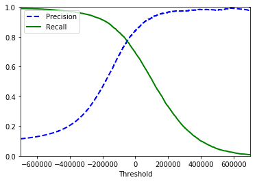
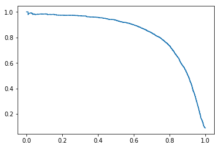
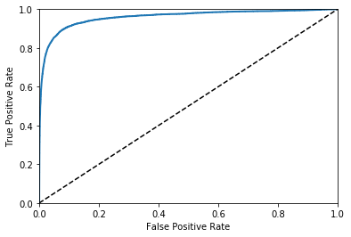
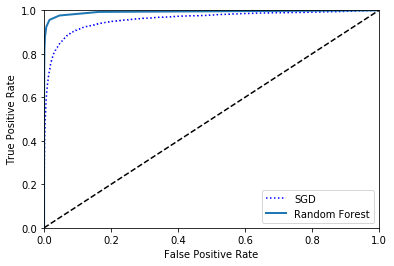
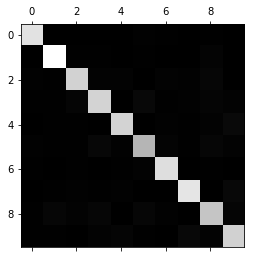
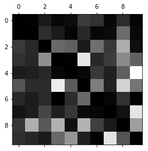
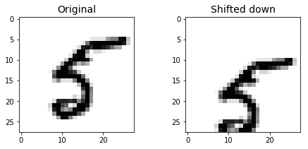
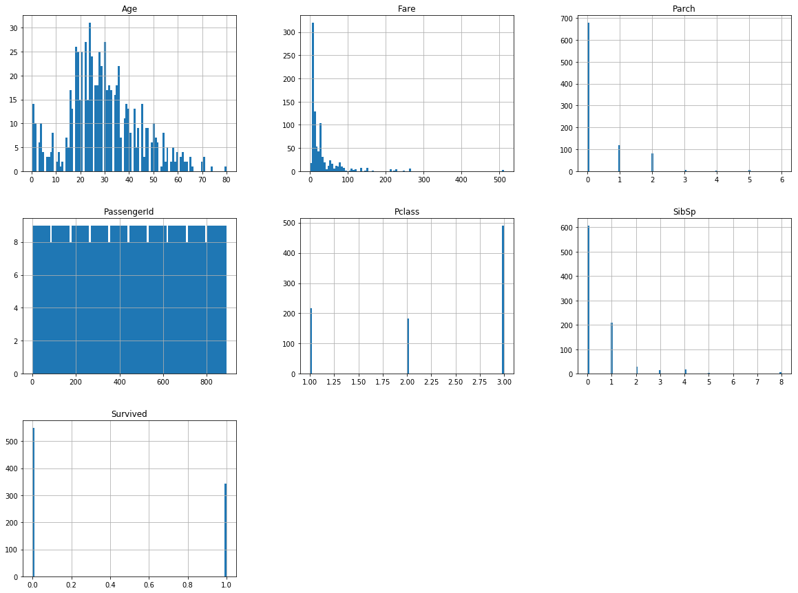

Hand - on 3
分类任务
预处理数据
获取数据集
使用 sklearn提供的MNIST数据集，进行分类练习。
1 | import warnings |
1 | from sklearn.datasets import fetch_mldata |
{'DESCR': 'mldata.org dataset: mnist-original',
'COL_NAMES': ['label', 'data'],
'target': array([0., 0., 0., ..., 9., 9., 9.]),
'data': array([[0, 0, 0, ..., 0, 0, 0],
[0, 0, 0, ..., 0, 0, 0],
[0, 0, 0, ..., 0, 0, 0],
...,
[0, 0, 0, ..., 0, 0, 0],
[0, 0, 0, ..., 0, 0, 0],
[0, 0, 0, ..., 0, 0, 0]], dtype=uint8)}
可以清晰的看到数据的结构，我们看看数据的详细情况
1 | X, y = mnist["data"], mnist["target"] |
(70000,)
将数据画出来画图代码如下（各个参数在代码中有解释详细可以见api）：
1 | %matplotlib inline |

5.0
处理数据集， 将其分成测试集与训练集
1 | X_train, X_test, y_train, y_test = X[:60000], X[60000:], y[:60000], y[60000:] #最简单的方式 |
多分类算法可以建立在二分类算法之上，后文可以看到。首先我们试试二分类算法以 5作为例子，所有数中就是（ == 5 或者 != 5 两种情况。所以我们把训练集测试集的标签修改为 0， 1两种情况
1 | y_train_5 = (y_train == 5) # True for all 5s, False for all other digits. |
array([False, False, False, ..., False, False, False])
先简化训练一个二分类，使用SGDClassifier分类器
某个名人说过，管他三七二十一 线性模型直接先拿出来看看。sklearn中已经帮我们实现好了各种模型，现在我们不要关系模型的底层如何工作。先把他用起来。熟悉流程，具体的分类分类器可以见sklearn的api（）
1 | from sklearn.linear_model import SGDClassifier |
array([ True])
评估一个分类器的好坏
我们先用传统的交叉验证，可以看到精确度已经很不错了。但是着这往往是不够的。在这个二分类问题上，否的占了绝大多数那么精确的自然就很高。
所以我们需要其他的的评估方式
1 | from sklearn.model_selection import cross_val_score |
array([0.965 , 0.95905, 0.9616 ])
1 | from sklearn.base import BaseEstimator |
1 | from sklearn.model_selection import StratifiedKFold |
0.965
0.95905
0.9616
1 | never_5_clf = Never5Classifier() |
array([0.909 , 0.90955, 0.9104 ])
使用其他评判方法 — 采用混淆矩阵来查看具体的预测情况
1 | from sklearn.model_selection import cross_val_predict # not corss_val_scores |
1 | from sklearn.metrics import confusion_matrix |
array([[53735, 844],
[ 1372, 4049]], dtype=int64)
1 | confusion_matrix(y_train_5, y_train_5) |
array([[54579, 0],
[ 0, 5421]], dtype=int64)
我们给出其他的评估方式
sklearn同样帮我们实现了。
1 | from sklearn.metrics import precision_score, recall_score |
0.6935989669802619
新的问题又出现了 precision 和 recall 之间有如何权衡呢我们可以用f1值
1 | from sklearn.metrics import f1_score |
0.7606716568885292
1 | y_scores = sgd_clf.decision_function([some_digit]) |
array([181985.89677917])
在不同的情况下我们需求的precision 和 recall 大小不一，我们可以修改阈值来获取更准确的判断
1 | threshold = 20000 #300000 |
array([ True])
1 | y_scores = cross_val_predict(sgd_clf, X_train, y_train_5, cv = 3, method = "decision_function") |
画出 precision 与 recall 的曲线来进行决策
由图中我们可以看到 precision 和 recall 是成负相关的
1 | from sklearn.metrics import precision_recall_curve |

1 | plt.plot(recalls, precisions) |

1 | y_train_pred_90 = (y_scores > 70000) |
0.9118254202300207
1 | recall_score(y_train_5, y_train_pred_90) #0.5665006456373363 |
0.5703744696550452
ROC receiver operating characteristic 曲线图
PR曲线会面临一个问题，当需要获得更高recall时，model需要输出更多的样本，precision可能会伴随出现下降/不变/升高，得到的曲线会出现浮动差异（出现锯齿），无法像ROC一样保证单调性。所以，对于正负样本分布大致均匀的问题，ROC曲线作为性能指标更好。
PR图和ROC图使用， 如果poitivecalss 少 或者 相较false negatives 更在意 false positives的时候 使用RP 反之就可以使用ROC图
1 | from sklearn.metrics import roc_curve |

1 | from sklearn.metrics import roc_auc_score |
0.9594366171439257
换个分类算法看看ROC的面积
1 | from sklearn.ensemble import RandomForestClassifier |

多分类
如果是用二分类器 分类多分类问题 sklearn 自动转成 OvA
1 | sgd_clf.fit(X_train, y_train) |
array([5.])
1 | some_digit_scores = sgd_clf.decision_function([some_digit]) |
array([[-155608.02760533, -555690.96286451, -356978.92322184,
-175413.31640276, -447476.21501408, 181985.89677917,
-635600.35487992, -405225.45597096, -721820.14291054,
-747332.14490551]])
1 | np.argmax(some_digit_scores) # 5 |
array([0., 1., 2., 3., 4., 5., 6., 7., 8., 9.])
如果使用OVO形式
1 | from sklearn.multiclass import OneVsOneClassifier |
45
1 | forest_clf.fit(X_train, y_train) |
array([[0.1, 0. , 0.1, 0. , 0. , 0.8, 0. , 0. , 0. , 0. ]])
交叉验证， 标准化
1 | cross_val_score(sgd_clf, X_train, y_train, cv=3, scoring="accuracy") #array([0.86842631, 0.87664383, 0.86888033]) |
array([0.86612677, 0.87064353, 0.85777867])
1 | from sklearn.preprocessing import StandardScaler |
array([0.90831834, 0.91114556, 0.9086863 ])
误差分析 进一步提高模型质量
1 | y_train_pred = cross_val_predict(sgd_clf, X_train_scaled, y_train, cv = 3) |
array([[5720, 3, 24, 8, 12, 56, 46, 8, 41, 5],
[ 2, 6473, 48, 29, 6, 42, 8, 12, 112, 10],
[ 54, 38, 5331, 97, 88, 25, 102, 52, 158, 13],
[ 48, 38, 135, 5370, 3, 217, 39, 58, 131, 92],
[ 26, 28, 36, 7, 5340, 8, 52, 29, 86, 230],
[ 72, 38, 36, 196, 76, 4596, 105, 29, 176, 97],
[ 38, 26, 39, 1, 40, 96, 5625, 6, 46, 1],
[ 20, 27, 68, 30, 54, 10, 7, 5811, 17, 221],
[ 49, 158, 80, 161, 15, 162, 57, 24, 5002, 143],
[ 44, 36, 25, 96, 137, 29, 3, 207, 77, 5295]],
dtype=int64)
1 | plt.matshow(conf_mx, cmap=plt.cm.gray) |

1 | row_sums = conf_mx.sum(axis=1, keepdims=True) |
1 | # print(row_sums) |
1 | np.fill_diagonal(norm_conf_mx, 0) |

1 | from sklearn.neighbors import KNeighborsClassifier |
1 | knn_clf = KNeighborsClassifier() |
KNeighborsClassifier(algorithm='auto', leaf_size=30, metric='minkowski',
metric_params=None, n_jobs=None, n_neighbors=5, p=2,
weights='uniform')
1 | knn_clf.predict([some_digit]) |
array([[False, True]])
宏平均和微平均的对比
如果每个class的样本数量差不多,那么宏平均和微平均没有太大差异
如果每个class的样本数量差异很大,而且你想:
更注重样本量多的class:使用微平均
更注重样本量少的class:使用宏平均
如果微平均大大低于宏平均,检查样本量多的class
1 | y_train_knn_pred = cross_val_predict(knn_clf, X_train, y_train, cv = 3) |
1 | noise = np.random.randint(0, 100, (len(X_train), 784)) |
1 | some_index = 5500 |
1 | knn_clf.fit(X_train_mod, y_train_mod) |
课后练习
将KNeighborsClassifer 的 accuracy 提高的到 97% 上
1 | from sklearn.neighbors import KNeighborsClassifier |
Fitting 2 folds for each of 1 candidates, totalling 2 fits
[CV] n_neighbors=4, weights=distance .................................
[Parallel(n_jobs=1)]: Using backend SequentialBackend with 1 concurrent workers.
1 | grid_search.best_params_ |
1 | from sklearn.metrics import accuracy_score |
训练集中加入图片上下左右移动后的图片，再看效果如何
1 | from scipy.ndimage.interpolation import shift |
1 | def shift_image(image, dx, dy): |
1 | image = X_train[1000] |

1 | X_train_augmented = [image for image in X_train] |
1 | shuffle_idx = np.random.permutation(len(X_train_augmented)) |
1 | from sklearn.neighbors import KNeighborsClassifier |
1 | knn_clf.fit(X_train_augmented, y_train_augmented) |
1 | y_pred = knn_clf.predict(X_test) |
1 | from sklearn.metrics import accuracy_score |
kaggle 泰坦尼克
数据的读取，整理
- 同样首先需要获取数据源（），然后查看数据的分布情况
1 | import os |
1 | import pandas as pd |
1 | train_data = load_titanic_data("train.csv") |
1 | train_data.head() |
| PassengerId | Survived | Pclass | Name | Sex | Age | SibSp | Parch | Ticket | Fare | Cabin | Embarked | |
|---|---|---|---|---|---|---|---|---|---|---|---|---|
| 0 | 1 | 0 | 3 | Braund, Mr. Owen Harris | male | 22.0 | 1 | 0 | A/5 21171 | 7.2500 | NaN | S |
| 1 | 2 | 1 | 1 | Cumings, Mrs. John Bradley (Florence Briggs Th... | female | 38.0 | 1 | 0 | PC 17599 | 71.2833 | C85 | C |
| 2 | 3 | 1 | 3 | Heikkinen, Miss. Laina | female | 26.0 | 0 | 0 | STON/O2. 3101282 | 7.9250 | NaN | S |
| 3 | 4 | 1 | 1 | Futrelle, Mrs. Jacques Heath (Lily May Peel) | female | 35.0 | 1 | 0 | 113803 | 53.1000 | C123 | S |
| 4 | 5 | 0 | 3 | Allen, Mr. William Henry | male | 35.0 | 0 | 0 | 373450 | 8.0500 | NaN | S |
1 | train_data.info() |
<class 'pandas.core.frame.DataFrame'>
RangeIndex: 891 entries, 0 to 890
Data columns (total 12 columns):
PassengerId 891 non-null int64
Survived 891 non-null int64
Pclass 891 non-null int64
Name 891 non-null object
Sex 891 non-null object
Age 714 non-null float64
SibSp 891 non-null int64
Parch 891 non-null int64
Ticket 891 non-null object
Fare 891 non-null float64
Cabin 204 non-null object
Embarked 889 non-null object
dtypes: float64(2), int64(5), object(5)
memory usage: 83.6+ KB
1 | train_data.describe() |
| PassengerId | Survived | Pclass | Age | SibSp | Parch | Fare | |
|---|---|---|---|---|---|---|---|
| count | 891.000000 | 891.000000 | 891.000000 | 714.000000 | 891.000000 | 891.000000 | 891.000000 |
| mean | 446.000000 | 0.383838 | 2.308642 | 29.699118 | 0.523008 | 0.381594 | 32.204208 |
| std | 257.353842 | 0.486592 | 0.836071 | 14.526497 | 1.102743 | 0.806057 | 49.693429 |
| min | 1.000000 | 0.000000 | 1.000000 | 0.420000 | 0.000000 | 0.000000 | 0.000000 |
| 25% | 223.500000 | 0.000000 | 2.000000 | 20.125000 | 0.000000 | 0.000000 | 7.910400 |
| 50% | 446.000000 | 0.000000 | 3.000000 | 28.000000 | 0.000000 | 0.000000 | 14.454200 |
| 75% | 668.500000 | 1.000000 | 3.000000 | 38.000000 | 1.000000 | 0.000000 | 31.000000 |
| max | 891.000000 | 1.000000 | 3.000000 | 80.000000 | 8.000000 | 6.000000 | 512.329200 |
1 | %matplotlib inline |

1 | corr_matrix = train_data.corr() |
1 | corr_matrix["Survived"].sort_values(ascending=False) |
Survived 1.000000
Fare 0.257307
Parch 0.081629
PassengerId -0.005007
SibSp -0.035322
Age -0.077221
Pclass -0.338481
Name: Survived, dtype: float64
我们看到数据中有非数字等等，所以我们分开处理。使用pipeline 一次性完成数据的处理
1 | from sklearn.base import BaseEstimator, TransformerMixin |
1 | from sklearn.impute import SimpleImputer |
1 | num_attribs = ["Age", "SibSp", "Parch", "Fare"] |
1 | train_prepared = full_pipeline.fit_transform(train_data) |
array([[22., 1., 0., ..., 0., 0., 1.],
[38., 1., 0., ..., 1., 0., 0.],
[26., 0., 0., ..., 0., 0., 1.],
...,
[24., 1., 2., ..., 0., 0., 1.],
[26., 0., 0., ..., 1., 0., 0.],
[32., 0., 0., ..., 0., 1., 0.]])
1 | y_train = train_data["Survived"] |
小鹿乱撞
线性模型
1 | from sklearn.model_selection import cross_val_score |
linear_model: 0.6962870275791625
svm
1 | from sklearn.svm import SVC |
svm: 0.7386715469299737
随机森林
1 | from sklearn.ensemble import RandomForestClassifier |
ensemble: 0.809334354783793
最近邻试试
1 | from sklearn.neighbors import KNeighborsClassifier |
neighbors: 0.7229029054590852
继续优化 1.调参 2.年龄分层 3….
调参
（0.8149526160481217 —— 0.8317563273181252)
1 | from sklearn.model_selection import GridSearchCV |
{'max_features': 'auto',
'min_samples_leaf': 2,
'min_samples_split': 2,
'n_estimators': 100}
1 | forest_clf = RandomForestClassifier(n_estimators = 100,max_features = 'auto', min_samples_leaf = 2, max_depth = 20,random_state=42) |
ensemble: 0.8294716831233686
年龄分层
1 | train_data["AgeBucket"] = train_data["Age"] // 15 * 15 |
<class 'pandas.core.frame.DataFrame'>
RangeIndex: 891 entries, 0 to 890
Data columns (total 12 columns):
PassengerId 891 non-null int64
Survived 891 non-null int64
Pclass 891 non-null int64
Name 891 non-null object
Sex 891 non-null object
SibSp 891 non-null int64
Parch 891 non-null int64
Ticket 891 non-null object
Fare 891 non-null float64
Cabin 204 non-null object
Embarked 889 non-null object
AgeBucket 714 non-null float64
dtypes: float64(2), int64(5), object(5)
memory usage: 83.6+ KB
1 | num_attribs = ["AgeBucket", "SibSp", "Parch", "Fare"] |
1 | train_prepared = full_pipeline.fit_transform(train) |
array([[15., 1., 0., ..., 0., 0., 1.],
[30., 1., 0., ..., 1., 0., 0.],
[15., 0., 0., ..., 0., 0., 1.],
...,
[15., 1., 2., ..., 0., 0., 1.],
[15., 0., 0., ..., 1., 0., 0.],
[30., 0., 0., ..., 0., 1., 0.]])
1 | forest_clf = RandomForestClassifier(n_estimators = 100,max_features = 'auto', min_samples_leaf = 2, max_depth = 20,random_state=42) |
ensemble: 0.8272242083758938
属性融合
1 | train["RelativesOnboard"] = train["SibSp"] + train["Parch"] |
1 | num_attribs = ["AgeBucket", "Fare"] #, "SibSp", "Parch", |
array([[15. , 7.25 , 0. , ..., 0. , 0. , 1. ],
[30. , 71.2833, 1. , ..., 1. , 0. , 0. ],
[15. , 7.925 , 0. , ..., 0. , 0. , 1. ],
...,
[15. , 23.45 , 0. , ..., 0. , 0. , 1. ],
[15. , 30. , 1. , ..., 1. , 0. , 0. ],
[30. , 7.75 , 0. , ..., 0. , 1. , 0. ]])
1 | forest_clf = RandomForestClassifier(n_estimators = 100,max_features = 'auto', min_samples_leaf = 2, max_depth = 20,random_state=42) |
ensemble: 0.8294211780728634
- 这机个方式不仅没有提升，反而还下降了。目前最高的得分就是以最优参数的随机森林分类算法